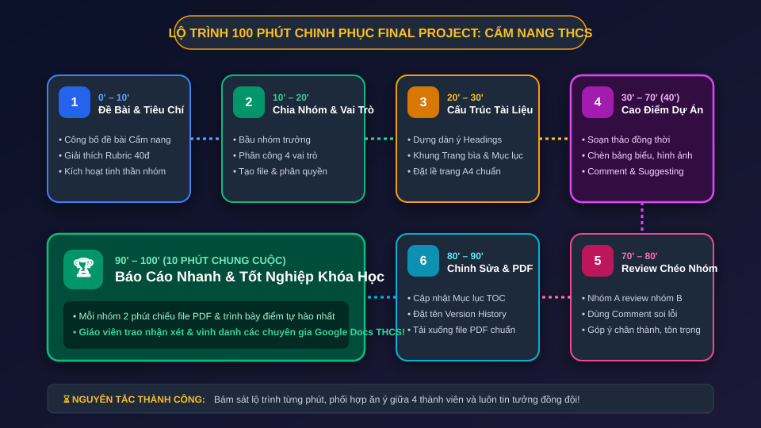
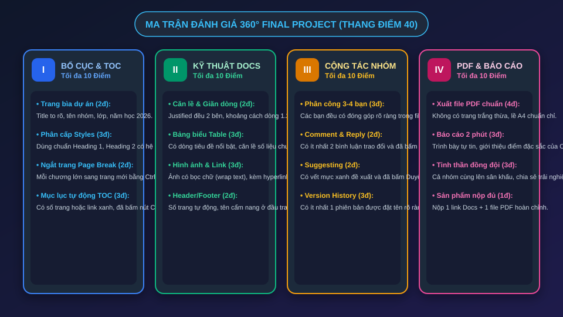
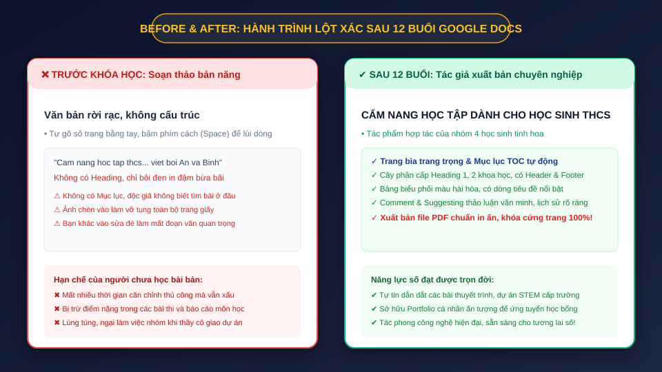
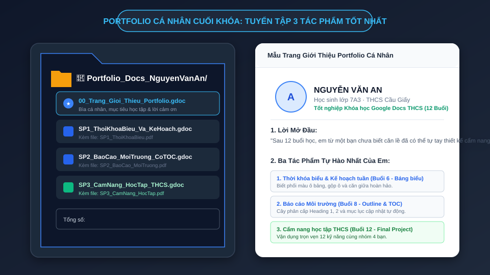

Chào mừng các em đến với ngày hội báo cáo chung cuộc! Đây là lúc tinh hoa của toàn bộ 12 buổi học được hội tụ trong một tác phẩm cẩm nang hoàn chỉnh: từ trang bìa trang trọng, mục lục tự động, bảng biểu, hình ảnh, phân quyền cộng tác đến xuất bản PDF đỉnh cao.
Một cuốn cẩm nang thực chiến giúp các bạn cùng trang lứa học giỏi hơn, quản lý thời gian tốt hơn và an toàn trên Internet:
Cuốn cẩm nang không chỉ là bài tập chấm điểm, mà sẽ được chia sẻ cho các bạn trong khối 6, 7 tham khảo trong năm học mới. Đây là tác phẩm đại diện cho năng lực công nghệ thông tin THCS của nhóm em!
Quan sát lộ trình 7 chặng để quản lý thời gian hiệu quả cùng đồng đội:

Nhóm có thể tùy biến sáng tạo, nhưng cần đảm bảo bố cục khoa học, logic:
Title, ảnh logo, tên thành viên, lớp và năm học 2026.
Mục lục tự động Table of Contents có số trang.
Lời ngỏ, mục đích cuốn cẩm nang gửi học sinh THCS.
Phương pháp Pomodoro, sơ đồ tư duy, bảng ghi chú Cornell.
Thời khóa biểu khoa học, cân bằng học tập và giải trí.
Bảo vệ mật khẩu, phòng tránh lừa đảo mạng xã hội.
Bảng phím tắt Docs, mẹo tra cứu Google thông minh.
Thông điệp truyền cảm hứng và lời chúc thi đua.
Thành công của dự án nằm ở sự phân chia nhiệm vụ mạch lạc ngay từ phút đầu tiên:
Soạn thảo lời mở đầu, quy tắc học tập và định hướng nội dung cốt lõi của cuốn cẩm nang.
Tìm kiếm ảnh minh họa sắc nét, thiết kế bảng Thời khóa biểu và bảng Mẹo máy tính hài hòa.
Đảm bảo phân cấp Heading 1, 2, giãn dòng 1.25, căn đều 2 bên và thiết lập Header & Footer số trang.
Chèn Mục lục tự động, soát lỗi chính tả, điều tra Lịch sử phiên bản và xuất file PDF hoàn mỹ.
Kiểm tra danh mục 13 vũ khí công nghệ đã học từ Buổi 1 đến Buổi 11:
Quan sát tiêu chuẩn chấm điểm chi tiết để nhóm phấn đấu đạt điểm tối đa:

Trang bìa chuyên nghiệp tạo ấn tượng thị giác mạnh mẽ ngay từ giây đầu tiên:
Dùng Style Title cỡ chữ 28–32pt, in đậm, màu sắc trang nhã (Xanh đậm hoặc Đỏ đô).
Ghi rõ: Tên các thành viên, Chi đội lớp, Trường THCS và Năm học 2026–2027.
Nhấn Ctrl + Enter ở cuối bìa để đẩy Mục lục sang trang 2 độc lập hoàn hảo!
Mục lục là tấm bản đồ dẫn lối độc giả khám phá toàn bộ cuốn cẩm nang:
Sau khi các bạn gõ thêm nội dung hoặc chèn ảnh làm nhảy số trang, Thư ký nhóm phải nhấp vào mục lục ➔ bấm biểu tượng Mũi tên xoay tròn (Cập nhật mục lục) để số trang luôn chính xác 100%!
Ứng dụng kỹ năng Buổi 6 để tạo bảng Thời khóa biểu hoặc Bảng mẹo phím tắt:
Tô màu nền hàng tiêu đề (ví dụ: Xanh dương nhạt hoặc Xám ấm), in đậm chữ tiêu đề.
Cột số thứ tự căn giữa, cột nội dung căn trái, cột thời gian hoặc số liệu căn giữa/phải.
Bôi đen bảng ➔ Chuột phải chọn "Phân phối các cột đều nhau" để bảng vuông vức.
Hình ảnh giúp cẩm nang trở nên hấp dẫn hơn đối với học sinh cấp 2:
Bấm vào ảnh ➔ Chọn chế độ Bọc văn bản (Wrap text) ➔ Đặt khoảng cách lề khoảng 3mm. Đoạn văn sẽ ôm sát quanh ảnh một cách tự nhiên như tạp chí chuyên nghiệp.
Dưới mỗi ảnh, gõ một dòng chú thích nhỏ (cỡ 9pt, in nghiêng) và gắn hyperlink trích dẫn nguồn ảnh hoặc tài liệu tham khảo để đảm bảo tính bản quyền số.
Vào phút thứ 70, Giáo viên ghép cặp: Nhóm 1 trao đổi quyền Nhận xét cho Nhóm 2:
Nhiệm vụ của nhóm đánh giá: Mở bài của nhóm bạn và kiểm tra 5 tiêu chí:
1. Bìa có Title và tên thành viên đầy đủ chưa?
2. Các chương có ngắt trang bằng Page Break không?
3. Mục lục tự động TOC đã được cập nhật chưa?
4. Hình ảnh và bảng biểu có bị lệch trang không?
5. Hành động: Để lại ít nhất 02 Comment góp ý văn minh và 01 Suggesting giúp bạn hoàn thiện bài!
Đánh dấu cột mốc hoàn thành tác phẩm trước giờ nộp bài:
Giáo viên sẽ mở Version History để chấm điểm tinh thần làm việc nhóm. Nếu thấy các mốc thời gian rõ ràng và tên phiên bản chỉn chu, nhóm em sẽ nhận trọn vẹn điểm thưởng Cộng tác!
Khóa cứng vẻ đẹp của Cẩm nang trước khi nộp và trình chiếu:
Chọn định dạng Tài liệu PDF (.pdf) để tải về máy tính.
Mở file PDF lướt từ trang bìa đến trang cuối xem có dòng chữ nào bị nhảy lẻ loi không.
Nộp 01 link Google Docs (quyền Người xem/Nhận xét) và 01 file PDF hoàn chỉnh.
Mỗi nhóm có 2 phút chiếu file PDF trên máy chiếu và chia sẻ với cả lớp:
Giới thiệu tên cẩm nang và thông điệp mà nhóm muốn gửi gắm tới học sinh THCS.
Cuộn đến trang có bảng biểu hoặc mục lục đẹp nhất, chia sẻ cách nhóm phối hợp làm nên trang đó.
Chia sẻ kỹ năng Docs mà nhóm thấy hữu ích nhất sau 12 buổi học và cảm ơn thầy cô, bạn bè.
Bấm các nút kiểm tra để kiểm định độ hoàn thiện của Cẩm nang học tập:
Từ những thao tác vụng về ban đầu đến tác giả xuất bản cẩm nang học tập chuyên nghiệp:

Tuyển tập 3 tác phẩm tự hào nhất của bản thân để lưu giữ làm hành trang học tập:

12 buổi học là một chuỗi trải nghiệm đầy cảm xúc của các em:
Làm quen Docs, phím tắt gõ văn bản, định dạng font chữ và hệ thống Heading Styles chuẩn mực.
Chèn ảnh bọc chữ, kẻ bảng biểu thời khóa biểu, căn lề trang A4 và tạo mục lục tự động TOC.
Chia sẻ an toàn, cộng tác Comment/Suggesting, cỗ máy thời gian Version History và Final Project!
10 câu hỏi bao quát trọn vẹn kiến thức của toàn bộ 12 buổi học:
Chúc mừng tất cả các em đã xuất sắc hoàn thành khóa học kỹ năng cốt lõi:
Trao tặng cho các học sinh THCS đã làm chủ 12 kỹ năng xử lý văn bản đám mây, cộng tác thời gian thực và xuất bản tài liệu chuẩn mực quốc tế!
DOCS LAB THCS · NIÊN KHÓA 2026Ghi lại để sử dụng suốt những năm tháng học tập cấp 2 và cấp 3:
Khóa học khép lại, nhưng hành trình khám phá công nghệ của các em chỉ mới bắt đầu. Những kỹ năng trình bày, cộng tác và bảo mật hôm nay sẽ là đôi cánh giúp các em bay cao trong mọi môn học và dự án tương lai!